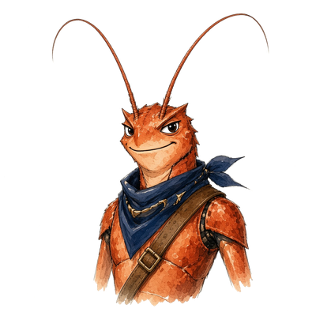

Lobsy
Expeditie
8B · K7R-2QM
Pauze
Koraalrif
Schelpenrij
Hier ben je
Schatgrot
Schatkaart
Pauze-eiland
Vuurtoren
Lampen
Lagune
Dit ben jij
De Schatgrot
· wereld 2 van 4 · vraag 7 van 15
De Schatgrot
·
Vraag 22 van 60
Ik vind het leuk om iets te maken of te repareren.
Nee
Niet echt
Soms
Best wel
Ja!

Even stoppen?
Je antwoorden zijn bewaard. Met je code ga je later verder waar je was.
Doorgaan
Stoppen voor nu
 LobsyExpeditieLobsyExpeditie
LobsyExpeditieLobsyExpeditie